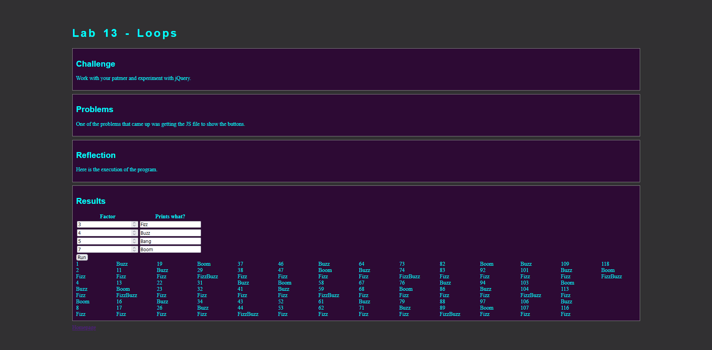
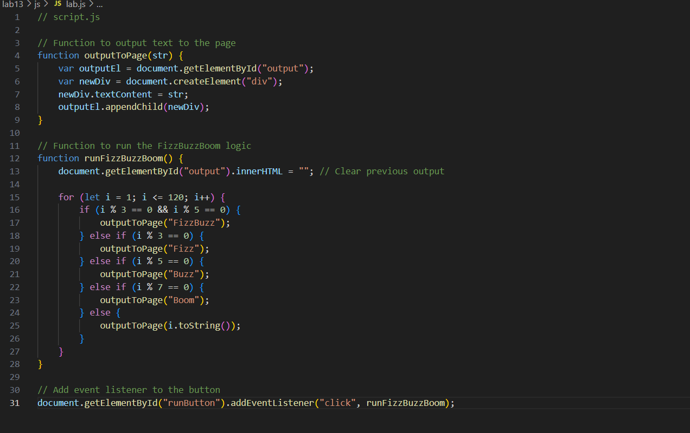

Lab 12 - Conditionals
Challenge
Work with your patrner and experiment with jQuery.
Problems
One of the problems that came up was getting the JS file to show the buttons.
Debugging
I reviewed the lecture talking about the Lab 13 and worked along with the recording. I rewrote the js file and tested it through replit tp see if everyhting worked. I then noticed that it still wasnt working after commiting to github. I saw that i was missing the output line and the script line in the html. After adding them everything then began to work.
 >  >